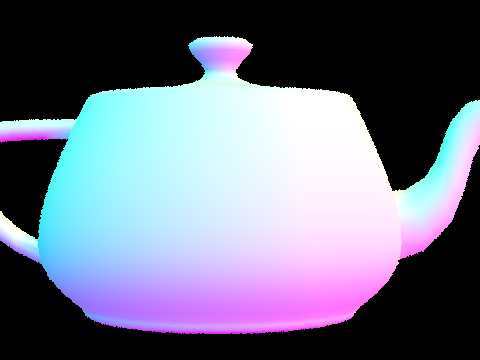

Use of late days
I included this part as I submitted this one quite late, and wanted to clarify my use of slip days!
I submitted the submission on 3/31, which counts as 8 late days: 3/16, 17, 18, 19~27 (Spring break as 1 day), 28, 29, 30, 31. I didn't use any of my 7 slip days on the earlier assignments, so I believe in total a late penalty of 1 day is applied. Please let me know if there is any discrepancy with the actual grading!
Overview
In this assignment, we implemented a physically-based global illumination renderer applying all concepts we learned e.g. BRDFs, Monte Carlo estimation, path tracing, direct/indirect illumination, etc.
Part 1: Ray Generation and Intersection
Walk through the ray generation and primitive intersection parts of the rendering pipeline.
Ray generation is the first step in the rendering pipeline where we generate samples of primary rays that are shot from the eye, to a specific point on the virtual image. These rays will be the starting point to the whole paths that will be generated according to the global illumination algorithm, implemented in the later parts. Care must be taken to add a random amount of "jitter" to each pixel position samples so that the rays are sampled to be directed to uniformly random screen positions and therefore estimate the render more accurately.
We also implemented intersection for triangle and sphere, which are crucial to find out which part of the scene the casted rays hit. We need to figure out not only the pointer to the hit primitive, but also the specific barycentric coordinate of the hit point that resides on the primitive.
Explain the triangle intersection algorithm you implemented in your own words.
I used the Moller-Trumbore algorithm, exactly as described in the
lecture slide.
Once I compute the b1 and b2 values, I can use the barycentric
coordinate interpolation to get the interpolated normal vector of the intersection
point, which I do in the Triangle::intersect function.
Show images with normal shading for a few small .dae files.
Thanks to the normal interpolation, the images look smooth even with low number of primitives.
|  | |
Part 2: Bounding Volume Hierarchy
Walk through your BVH construction algorithm. Explain the heuristic you chose for picking the splitting point.
I chose the axis along which the bounding box has the longest extent as the splitting axis, and chose the median point in terms of number of objects as the split point. For each iteration at each tree level, I sort the list of objects by the coordinate of their centroids along the split axis before I compute the median.
Show images with normal shading for a few large .dae files that you can only render with BVH acceleration.
As shown in Part 1, maxplanck.dae and peter.dae are the ones
that have large enough primitives that it does not really make sense to render
without the BVH acceleration.
Compare rendering times on a few scenes with moderately complex geometries with and without BVH acceleration. Present your results in a one-paragraph analysis.
maxplanck.dae takes 0.0823s with BVH | 106.2s without BVH | 50801 primitivespeter.dae takes 0.0942s with BVH | 91.9s without BVH | 40018 primitivesbeast.dae takes 0.0666s with BVH | 145.2 without BVH | 64618 primitives
The reason why the BVH acceleration speed up the time so much is because it
converts the time complexity of the ray casting from O(R*N)
to O(R*logN), where R is the number of ray and N is the number
of primitives. Without the BVH, the algorithm iterates over entire list
of primitives, over all rays. With the BVH, there's still the iteration
over all rays, but the intersection operation for each ray gets cut down to
O(logN) as the time is proportional to the traversed depth of the tree.
This difference in time complexity gets much more dramatic with larger scenes
like the above two.
Part 3: Direct Illumination
Walk through both implementations of the direct lighting function.
Uniform hemisphere sampling: the implementation starts by having a loop
that iterates for each new sample. We first generate a sampled ray using
hit_p as origin and hemisphereSampler->get_sample()
as direction, where the latter is in the object space and therefore should
be converted to world space using o2w. The ray's
min_t is also set to EPS_F to avoid floating point problems.
We then use zero_bounce_radiance to find out the emission
along the ray, multiply that with the BSDF and pdf as per the
rendering equation, add that to a radiance sum variable light_out,
and finally normalize it by num_samples to make it unbiased.
Importance sampling: Same as above, but there's a nested for loop
where we (1) iterative over all lights, and (2) iterate over light samples
for each light. For the inner loop (2), we set the loop counter conditionally
depending on whether the light is point light, so that we only iterate
once for the point light. For point lights, we multiply the radiance value by
ns_area_light so that its sampling contribution is equal to
other area lights. max_t is set to dist_to_light - EPS_F
to avoid floating point problems. Lastly, we normalize the radiance sum
by ns_area_light to make it an unbiased estimator.
Show some images rendered with both implementations of the direct lighting function.
Below are renders of CBbunny, dragon and wall-e, rendered with 4 samples per pixel and 1 sample per light. Note that dragon and wall-e is rendered completely black for hemisphere sampling, because the probability of a hemisphere sampled ray hitting the point light is almost zero.

|
|

|
-s 4 -l 1Focus on one particular scene with at least one area light and compare the noise levels in soft shadows when rendering with 1, 4, 16, and 64 light rays (the -l flag) and with 1 sample per pixel (the -s flag) using light sampling, not uniform hemisphere sampling.
The most notable difference is the smoothness of shadow below the bunny. This is because with higher -l samples, the parts where an area light is partially occluded is estimated with lower noise, therefore rendering smooth shadows more accurately.
-s 1,
-l 1,4,16,64Compare the results between uniform hemisphere sampling and lighting sampling in a one-paragraph analysis.
The reason why lighting sampling results in more realistic rendering with much fewer samples is because it is a form of importance sampling that tracks the probability density of the incident radiance much better. The radiance along incident rays directed toward the lights are much likely to be higher (and therefore contributing to the actual value more), than for other rays that are directed elsewhere. By focusing more on rays that contribute more significantly to the overall irradiance, lighting sampling converges to the accurate solution much faster.
Part 4: Global Illumination
Walk through your implementation of the indirect lighting function.
The at_least_one_bounce_radiance function follows the path tracing
pseudocode in the lecture material, where it
sample_f(),In the middle of this, there are exit conditions that terminate the path by returning from the function if
max_ray_depth
(which is tracked inside the ray parameter, r.depth), orcoin_flip(cpdf) call returned false.
The cpdf is set to 0.65 in the code.Show some images rendered with global (direct and indirect) illumination. Use 1024 samples per pixel.

|
|
-s 1024 -l 8 -m 5Pick one scene and compare rendered views first with only direct illumination, then only indirect illumination. Use 1024 samples per pixel. (You will have to edit PathTracer::at_least_one_bounce_radiance(...) in your code to generate these views.)
In indirect-only illumination, we can clearly see the color bleeding and diffusive interreflections on the sides of the spheres, and on the floor parts close to the wall.
For CBbunny.dae, compare rendered views with max_ray_depth set to 0, 1, 2, 3, and 100 (the -m flag). Use 1024 samples per pixel.
max_ray_depth set to 0, 1, 2, 3, 100
Pick one scene and compare rendered views with various sample-per-pixel rates, including at least 1, 2, 4, 8, 16, 64, and 1024. Use 4 light rays.
One thing is that there is lot less noise and variance between neighboring pixels with higher sample-per-pixel. Also, the dark corners of the Cornell box or under the bunny is where we can see the improvement in noisiness most clearly with higher samples. This is because for those dark parts, there are less incident rays that originate from the lighting and contribute to the irradiance, and therefore need more samples to converge to the accurate value.
-s set to 1, 2, 4, 8, 16, 64, 256, 1024
Part 5: Global Illumination
Walk through your implementation of the adaptive sampling.
I added an if-statement in the pixel sampling loop in
PathTracer::raytrace_pixel function, which gets executed
whenever the condition (n_samples > 1 && n_samples % samplesPerBatch == 0)
is satisfied. In the if-statement, I compute the mean and variance value
by following the eqution in the spec, and when the I value is less or equal
to the maxTolerance * mean, I exit the pixel sampling loop
using a break statement.
The local variable n_samples keeps
track of the actual number of pixel samples taken, which may be less than
ns_aa if the adaptive exit condition fired. We use this
variable to normalize the radiance sum at the end of the function, as well
as to assign to the sampleCountBuffer array.
Pick one scene and render it with at least 2048 samples per pixel. Show a good sampling rate image with clearly visible differences in sampling rate over various regions and pixels. Include both your sample rate image, which shows your how your adaptive sampling changes depending on which part of the image you are rendering, and your noise-free rendered result. Use 1 sample per light and at least 5 for max ray depth.
Similar to what we discussed in Part 4, the relatively dark parts in the scene like the corners of the CB box and the shadowed area under the spheres are what requires the most amount of samples to converge. This is because relatively fewer rays originated from the light reach those surfaces, therefore requiring more samples to get the similar number of radiance contribution from the secondary rays. Also, the interreflections going on between the surfaces mean that the secondary rays reach the light sources after a high number of bounces, also meaning that more samples are required to allow such paths to actually hit the light source and have nonzero contributions.
-s 2048 -a 64 0.05 -l 1 -m 5